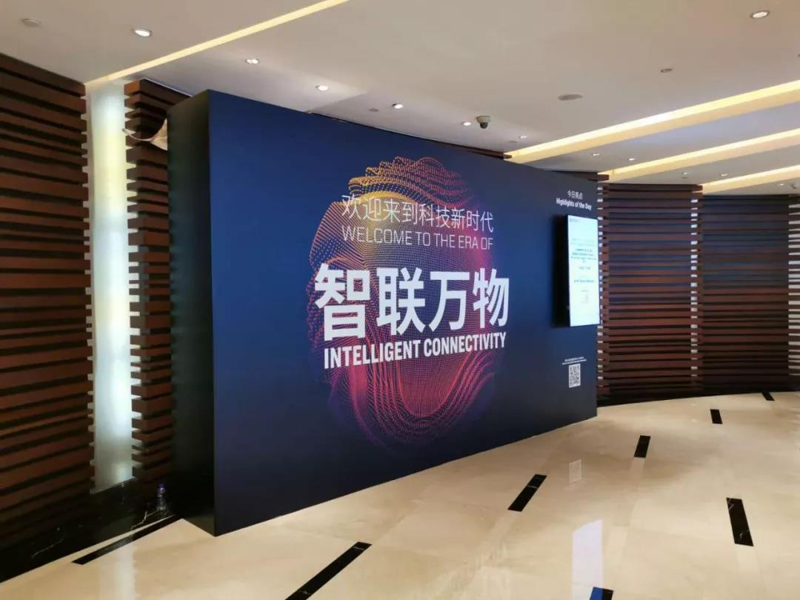
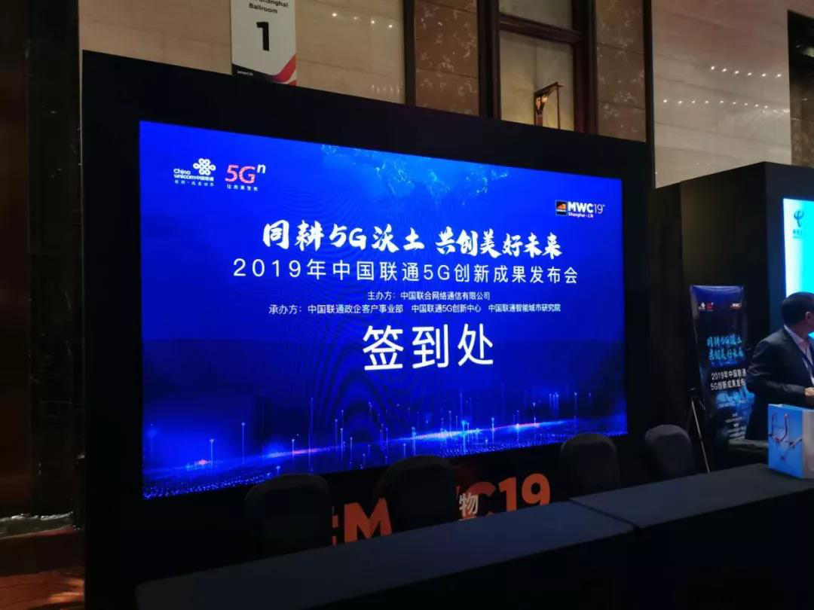
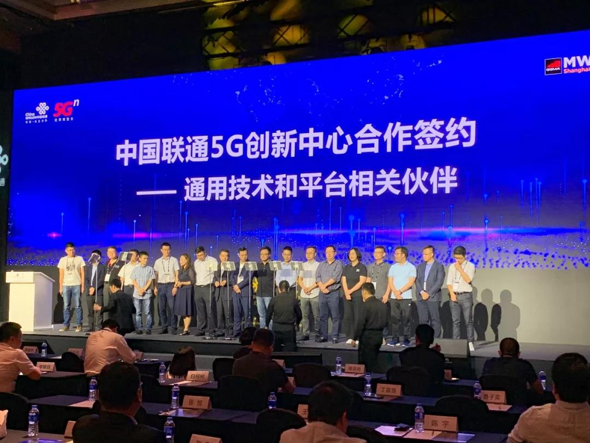
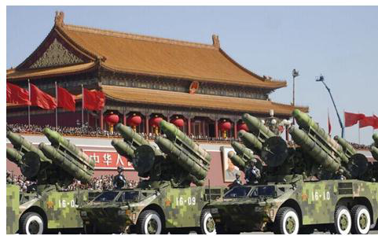
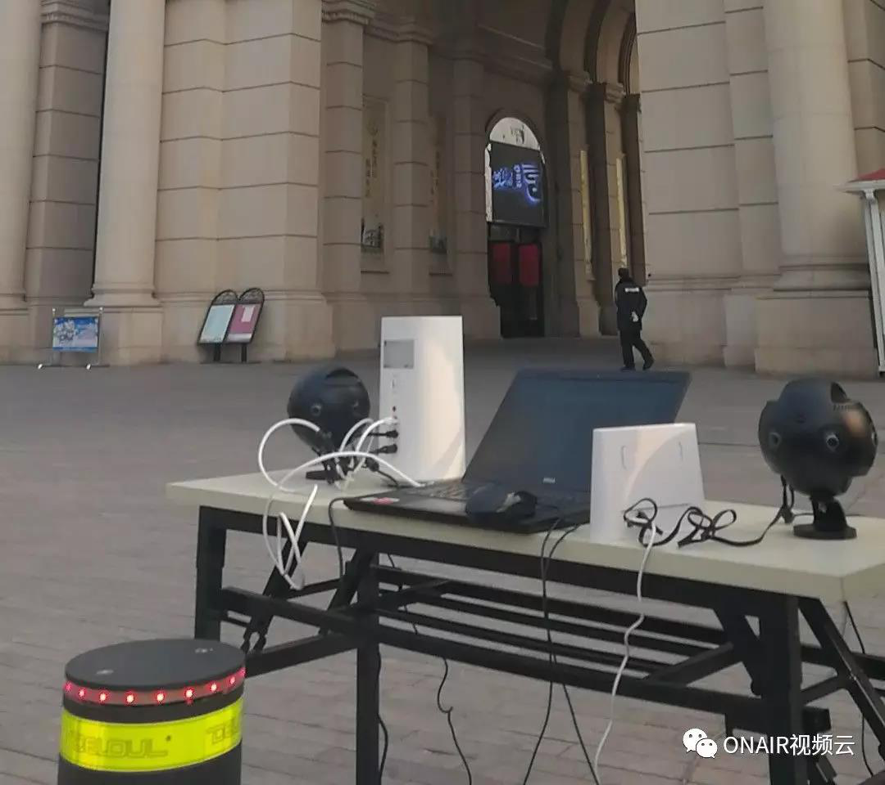
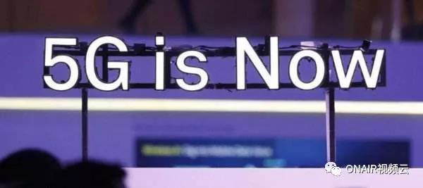

厉害了！ONAIR阳光云视受邀参加MWC（世界移动通信大会）并签订5G战略合作协议！
不知不觉，5G、人工智能、loT等新技术就已经从刚开始萌芽中的话题变为真正来到我们身边，但千变万化、风起云涌的新应用始终离不开“云”的包融，作为中国专业的视频云技术服务商，6月27日北京阳光云视科技有限公司站台全球最大5G网络全覆盖的科技盛会——MWC（世界移动通信大会）。


活动以“感受智联万物如何塑造，行业新生态与美好未来”为主题，ONAIR阳光云视出席2019年世界移动大会 · 上海，与来自全国各地的行业精英、意见领袖、伙伴大咖等一同深入探讨行业趋势和热点话题，共同创见未来。

大会期间，ONAIR阳光云视与中国联通也达成了重磅合作——签署了5G媒体应用与通讯服务的战略协议，为驱动5G发展提供“技术+应用”的融合创新。ONAIR阳光云视将持续探索5G媒体应用的解决方案，助力中国联通一起构建5G生态联盟。

ONAIR视频云率先支持5G标准下4K视频、VR/AR直播场景

2015年9月3日，阳光云视联手新华社360度全景直播抗战胜利70周年阅兵仪式（即93大阅兵），该项目是ONAIR在全景直播中的首次应用。在本次直播，ONAIR视频云将93大阅兵同级别技术提升到5G标准，率先实现了4K全景直播、无人机直播，真正实现超低延时、不限并发（观看人数）的广电级直播。
2019年2月26日，ONAIR视频云携手华为，助力中国移动天津市首个民用5G基站开通，现场展示超高清4K全景直播、无人机直播，五大道百年全景尽收眼底。

（4K全景直播设备）
ONAIR阳光云视邀您共创5G数字生态

5G时代4K、8K应用落地，基于实时传输的VR/AR流媒体领域将出现消费级产品！——来源《2019-2020年视频云应用趋势洞察》白皮书
5G技术驱动4K的大规模应用将带来整个生态的迭代，从基础设施、网络到终端硬件、4K内容制作-剪辑-播放、商业模式的创新，这样才能产生真·4K、8K落地。5G解决的并不是单纯的传输技术，能否拉动生态前进，才是它更重要的使命。稳定的真·4K级直播、点播解决方案是拓展超高清影视频内容、远程医疗、安防监控等应用场景的关键支撑。ONAIR视频云基于广电行业20年积累，拥有丰富的大型活动如93大阅兵、青奥会等直播经验，业界领先的视频云技术稳定应对4K大码流、高并发场景的需求。
阳光云视作为中国联通战略合作伙伴，通过本次MWC（世界移动通信大会），将携手中国联通共建5G数字生态，迎接5G时代“技术+应用”融合创新的大发展，致力于推动视频生产能力的变革，让视频应用更轻松！